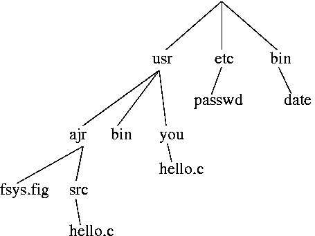

Lectures
Tutorials
Assignments
After experimentation with this filesystem, he and several others went on to implement the rest of an operating system, which became unix.
Any filesystem is basically a complex data structure on disk. The starting point for the unix filesystem is the "inode". 'i' for "index". This is an index entry for a single file on the disk.
A disk holding a unix filesystem contains a bunch of inodes and a bunch of data blocks. Each inode represents one file. Not necessarily a plain file; each directory gets its own inode too.
A directory is a list of records (structs), or pairs if you prefer, which are simply a file name and an inode number for that file. Here's an example "i-list":
| i | mode | contents |
|---|---|---|
| 2 | D | usr 7, etc 4, bin 6 |
| 3 | contents of password file | |
| 4 | D | passwd 3 |
| 5 | D | fsys.fig 10, src 11 |
| 6 | D | date 9 |
| 7 | D | bin 8, ajr 5, you 12 |
| 8 | D | ... |
| 9 | date program | |
| 10 | ... | |
| 11 | D | hello.c 13 |
| 12 | D | hello.c 14 |
| 13 | ... | |
| 14 | ... | |
| ... |
The numbers on the left do not actually appear on the disk; we just have a big list of inodes in order. An array.
As well, the contents of the file is in the data blocks, not the inode; what is in the inode is the location of the data blocks which are the content of that file. The inode contains a variety of data, which is discussed below.
Directories' contents are much less substantial than the inode information. The contents of a directory is simply a list of pairs (structs of two elements), which are the file name and the inode number for that file. For example, the root directory above, the file contents pointed to by inode number 2, contain the three records which say that the directory contains three entries: usr, which is inode 7; etc, which is inode 4; and bin, which is inode 6.
The above chart thus represents the following directory tree:

We can identify a particular file in this hierarchical filesystem by giving a
"path name", which is a sequence of directories to traverse until you get to
the desired file (which, like any file, might be a directory; but the
intermediate nodes in the path must be directories).
For example, the "hello.c" near the lower left can be identified as
"/usr/ajr/src/hello.c". Since the path name begins with a "/", it starts from
the root of the tree. Alternatively, if we do not begin with a slash, we
start from the "current directory" (which you can change with the "cd"
command as you know).
Suppose I want to have another name for the "date" command ("/bin/date", inode 9). I can call it "d" (in the current directory) by executing the command
ln /bin/date dThis creates an additional link for the date command. Look at the "ls -li" output, where "-i" means "also tell me the inode number":
% ls -li /bin/date /u/ajr/d 9 -r-xr-xr-x 2 root wheel 14716 Jan 5 00:35 /bin/date 9 -r-xr-xr-x 2 root wheel 14716 Jan 5 00:35 /u/ajr/d %The extra column on the left is the inode number. They have the same inode number because they are the same file. The filesystem tree is no longer a tree.
We can also note that the "link count" (third field above) is now two; there are two links to this file. There is only one actual file involved, although it is "in" two different directories. The only thing in the directory is the file name; thus all of the other ls -l information is the same: the protection, owner, size, times, and data block references are all in the inode.
With the "current directory" concept,
you want to be able to specify "the current directory".
e.g. If you run "ls"
with no arguments, that means to list the current directory;
it calls opendir(), and it needs something to pass to it.
Convention:
in every directory, you have a "." entry which refers to the directory itself.
It also turns out to be convenient to specify "the parent directory". Convention: in every directory, you have a ".." entry which refers to the parent directory.
This gives us the following revised contents, after also doing the "ln /bin/date d" command in my home directory:
| i | mode | contents |
|---|---|---|
| 2 | D | usr 7, etc 4, bin 6, . 2, .. 2 |
| 3 | contents of password file | |
| 4 | D | passwd 3, . 4, .. 2 |
| 5 | D | fsys.fig 10, src 11, d 9, . 5, .. 7 |
| 6 | D | date 9, . 6, .. 2 |
| 7 | D | bin 8, ajr 5, you 12, . 7, .. 2 |
| 8 | D | ... |
| 9 | date program | |
| 10 | ... | |
| 11 | D | hello.c 13, . 11, .. 5 |
| 12 | D | hello.c 14, . 12, .. 7 |
| 13 | ... | |
| 14 | ... | |
| ... |
For "/", in designing the unix filesystem they could have omitted the ".." directory entirely, but they chose to make /.. be / itself, as present above.
So, what data is in the inode? Not most of what's above. Most of the above is a statement of the contents of the files pointed to by the various inodes. The only data above which represents the actual inode contents is that 'D' meaning directory.
In addition to that one bit of information saying whether or not the file in question is a directory, the inode contains:
The unix filesystem is a reasonably simple way to achieve a number of objectives. Simplicity is good. This is a recurring theme amongst skilled computer programmers, and it's embodied very heavily in unix.
device files
symlinks [circa 1980 [all previous was original design]]
n.b. that symlinks can cross filesystems... hard links can't!
The above scheme gives us a maximum file size which is just under a gigabyte. Since gigabyte disks were unheard of at the time, this was not a problem.
More modern allocation schemes, since the early 1980s, have wasted space a bit more on small files and the result is that the limitation is usually 2 GB. Still, this isn't good enough for some tasks.
So these days, many unix manufacturers have changed the system around a little to get a larger maximum file size, although some haven't -- this scheme doesn't prevent disks being more than a gigabyte, just individual files. Anyway, the changes are pretty straightforward: you can make that single-indirect block a double-indirect block; you can make the double-indirect block a triple-indirect block. Just don't lose the bound on the number of reads, or you no longer really have random access.
Another more modern innovation, some filesystems only, circa 1990: small files placed completely in the inode, thus taking zero blocks of disk space.
Good exercise: write "pwd". (e.g. in C)